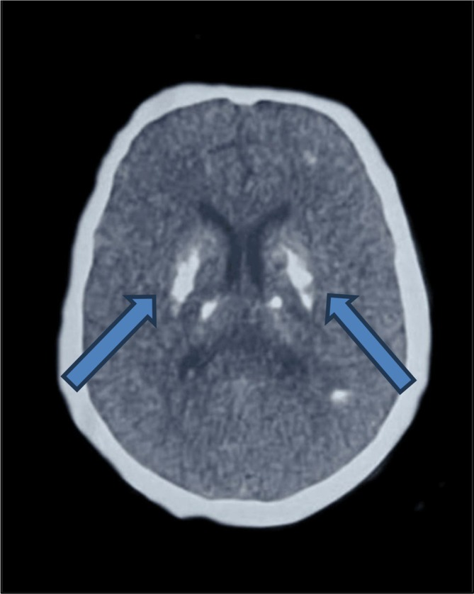
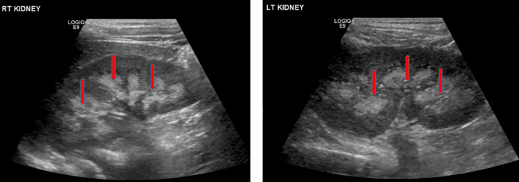
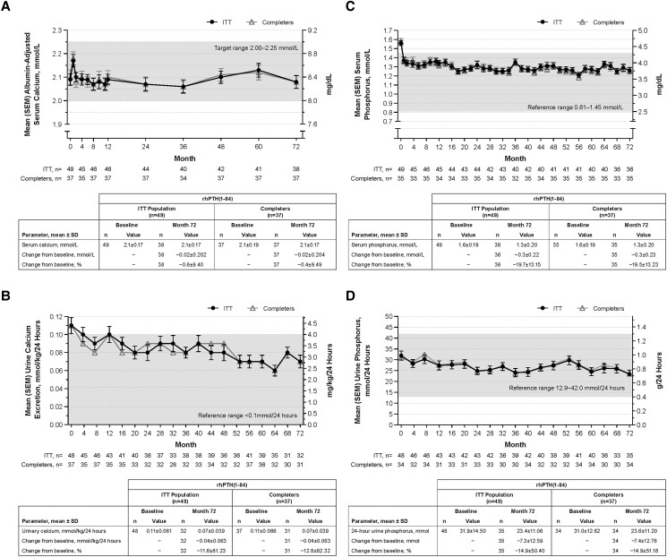

1880 — Suy cận giáp vĩnh viễn sau cắt tuyến giáp: quản lý suốt đời, calci niệu và PTH thay thế / Permanent post-thyroidectomy hypoparathyroidism
Tags: pattern:voi-hoa-nao pattern:voi-hoa-thuy-than pattern:ha-calci vung:tuyen-giap vung:nao vung:than protocol:CT-so-nao protocol:sieut-am-than protocol:calci-nieu-24h score:calci-hieu-chinh score:PTH
Mức chắc chắn (certainty): tổng hợp y văn (literature synthesis) — ghép đoàn hệ 518 bệnh nhân ung thư giáp biệt hóa (PMC13706862, CC BY 4.0), sổ bộ 544 bệnh nhân (PMC8889095, CC BY 4.0), đoàn hệ bảo hiểm 8.097 bệnh nhân (PMC8004511, CC BY-NC 4.0), so sánh siêu âm–CT 22 bệnh nhân (PMC3590469), 2 nghiên cứu mở rộng rhPTH(1-84) 49 bệnh nhân (PMC10119703, PMC6760337), thử nghiệm pha 3 palopegteriparatide 104 tuần (PMC13525197, CC BY), đoàn hệ 65 bệnh nhân vùng Vịnh (PMC13184618), và 2 tổng quan điều trị (PMC13666082; PMC7707836). Không có thử nghiệm ngẫu nhiên nào so ngưỡng calci niệu với kết cục thận.
Câu chốt: suy cận giáp vĩnh viễn không phải "uống calci cho khỏi tê tay" mà là bệnh mô phỏng PTH sai — uống calci + calcitriol đẩy calci huyết thanh về bình thường nhưng không tái lập được tái hấp thu calci ở ống thận, nên calci niệu tăng và thận trả giá. Trong sổ bộ 544 người: sỏi thận 32,5%, vôi hóa tủy thận 12,3% (74% hai bên), CKD 3a–5 15,8%, đục thủy tinh thể 9,4%, vôi hóa não 4% — và chỉ 56% đạt mục tiêu calci máu (PMC8889095). Vì vậy câu hỏi hình ảnh học đúng là: "thận và não đã bị vôi hóa chưa?", không phải "tuyến cận giáp còn bao nhiêu".
1. Tổng quan bệnh học – cơ chế hình ảnh: vì sao "calci máu bình thường" vẫn làm hỏng thận
1.1 Thiếu PTH làm gì (và tại sao hình ảnh lại ở thận, não, mắt)
- PTH bình thường làm ba việc: hủy xương (giải phóng calci), tăng tái hấp thu calci ở ống lượn xa, và tăng 1α-hydroxylase ở thận để sinh calcitriol → tăng hấp thu calci ruột. PTH còn gây phosphaturia (thải phosphat qua nước tiểu).
- Khi PTH mất: (1) xương giảm luân chuyển (low bone turnover) — vì vậy mật độ xương có thể bình thường hoặc cao, không phải "loãng xương"; (2) thận không được lệnh giữ calci → mỗi mg calci ăn/uống vào đều bị lọc và thải; (3) phosphat tích lại → phosphat máu cao; (4) calcitriol thấp → giảm hấp thu ruột.
- Hệ quả kép — đây là gốc của toàn bộ hình ảnh:
- Điều trị thay thế (calci + calcitriol) chỉ đẩy calci huyết thanh lên bằng cách tăng tải lọc; không có PTH, ống thận không tăng tái hấp thu → calci niệu cao dù calci máu "vừa đủ". Calci + phosphat trong nước tiểu kết tủa ở đỉnh nhú thận → vôi hóa tủy thận (medullary nephrocalcinosis) và sỏi calci.
- Tích phosphat + calci → tích calci × phosphat (Ca × P) tăng → kết tủa calci-phosphat ở mô đệm giàu kiềm/ít chuyển hóa: hạch nền, đồi thị, nhân răng, thủy tinh thể, thành mạch. Đây là vôi hóa chuyển hóa (metastatic calcification), khác vôi hóa loạn dưỡng (dystrophic) của mô hoại tử.
- Vì sao CT thấy được: calci hấp thụ tia X mạnh (đậm độ cao, thường > 100 HU; tổn thương điển hình 200–800 HU), nên CT không cản quang là khảo sát chuẩn cho vôi hóa hạch nền. Trên MRI, calci mất tín hiệu ở mọi chuỗi xung (không có proton tự do) và nhòe tín hiệu (blooming) trên SWI — MRI không dùng để phát hiện vôi hóa nhỏ.
- Vì sao siêu âm thấy vôi hóa tủy thận: tinh thể calci ở đỉnh nhú tạo mặt phân cách âm mạnh → trụ thận tăng hồi âm (echogenic pyramids), có thể không có bóng lưng khi lắng đọng nhẹ; khi nặng mới có bóng lưng (shadowing). Đây là lý do siêu âm nhạy hơn CT ở mức nhẹ–trung bình: trong 22 bệnh nhân suy cận giáp chụp cả hai, hợp đồng liên phương thức chỉ κ 0,47 (đồng thuận 60%), 81% ca lệch có điểm siêu âm cao hơn, OR 5,97 (2,60–13,75) cho việc siêu âm cho điểm cao hơn (PMC3590469).
- Vì sao ECG là "hình ảnh" của hạ calci: calci ngoại bào thấp kéo dài pha 2 điện thế hoạt động cơ tim → QT dài, dễ xoắn đỉnh. Sổ bộ 544 người ghi loạn nhịp 7,2% (PMC8889095).
1.2 Ngưỡng định lượng của "suy cận giáp vĩnh viễn" và gánh nặng thận–não
- Định nghĩa thực hành: còn phải dùng calci và/hoặc vitamin D hoạt hóa ≥ 12 tháng sau mổ = vĩnh viễn (PMC13706862); 11,6% (60/518) bệnh nhân ung thư giáp biệt hóa, theo dõi trung vị 10,8 năm; nạo hạch cổ trung tâm là yếu tố độc lập aOR 2,94 (1,55–5,57). Đoàn hệ 742 người khác ghi 11,7% (PMC11785684, đã dẫn ở bài 1874).
- Thận: so với người không suy cận giáp, sỏi thận HR 1,81 (1,60–2,04) và vôi hóa tủy thận HR 6,94 (4,41–10,92) (PMC8004511, 8.097 vs 40.485 người, 5 năm).
- Sổ bộ 544 người (PMC8889095): sỏi 32,5%, vôi hóa tủy thận 12,3% (74% hai bên), CKD 3a–5 15,8% (eGFR < 60), đục thủy tinh thể 9,4% (mốc 9,5 năm, OR 6,96), vôi hóa não 4% toàn sổ bộ nhưng 54,5% trong 44 người được chụp CT sọ; 34,5% người có vôi hóa hạch nền có bệnh tâm thần–thần kinh.
- Kiểm soát kém là quy luật, không phải ngoại lệ: chỉ 56% đạt mục tiêu calci và 52% đạt mục tiêu phosphat (PMC8889095); một đoàn hệ 65 người vùng Vịnh dùng calci trung vị 2.400 mg/ngày, chỉ 55,4% được chụp thận và 27,7% được chụp não (PMC13184618).
2. Mẫu hình + chẩn đoán phân biệt theo vị trí (gamut)
Ba câu hỏi với mọi phim của bệnh nhân suy cận giáp: (1) có vôi hóa hạch nền đối xứng không? (2) có vôi hóa tủy thận/sỏi không? (3) calci niệu 24 giờ bao nhiêu?
- Não — vôi hóa hạch nền đối xứng (bilateral basal ganglia calcification): gamut "PTH–PSEUDO–FAMILY–AGE–TOXIN–INFECTION":
- PTH: suy cận giáp sau mổ, suy cận giáp vô căn, giả suy cận giáp (pseudohypoparathyroidism), cường cận giáp.
- PSEUDO/FAMILY: bệnh Fahr (primary familial brain calcification) — di truyền, calci–PTH bình thường.
- AGE: vôi hóa nhỏ, điểm, ở globus pallidus của người già — lành tính.
- TOXIN/INFECTION: CO, chì, rượu; CMV, toxoplasma, HIV.
- Hình thái gợi ý chuyển hóa: đối xứng, đều, không phù, không hiệu ứng khối, ở globus pallidus + putamen + nhân đuôi, có thể lan đồi thị, nhân răng, chất trắng dưới vỏ — như ca minh họa (Hình 1).
- Thận — vôi hóa tủy thận (medullary nephrocalcinosis): gamut theo cơ chế tăng calci niệu / tăng phosphat niệu: suy cận giáp đang điều trị, cường cận giáp, nhiễm toan ống thận type 1, bệnh xốp tủy (medullary sponge kidney), sarcoidosis, ngộ độc vitamin D, dùng furosemide kéo dài ở trẻ sơ sinh. Phân bố đối xứng ở đỉnh nhú, khác vôi hóa vỏ thận (viêm cầu thận mạn, hoại tử vỏ) và khác sỏi (cục tự do trong đài–bể thận).
- Xương: không có tổn xương khu trú; BMD bình thường hoặc cao — không dùng BMD để chẩn đoán/loại trừ.
- Mắt: đục thủy tinh thể (9,4%, sau ~9,5 năm) — khám đèn khe, không cần CT.
- Tuyến cận giáp: không thấy tuyến trên siêu âm/CT là bình thường sau mổ — không phải "teo tuyến" cần chẩn đoán; hình ảnh không định lượng được chức năng.

Ca 2 trong loạt 3 ca Fahr do suy cận giáp: vôi hóa dày, đối xứng ở nhân đuôi–putamen, kèm ổ điểm đồi thị/periventricular; vỏ não và chất trắng dưới vỏ tương đối không bị. Nguồn: Gohar A et al., Clin Case Rep 2026 (PMC13381713), CC BY 4.0 — nguyên bản, không crop.3. Bảng so sánh phân biệt (ma trận đối chiếu)
| Thực thể (entity) | Hình ảnh điển hình | Chốt vào (rule-in) | Chốt loại (rule-out) | Gợi ý xác nhận |
|---|---|---|---|---|
| Suy cận giáp sau mổ (bài này) | CT sọ: vôi hóa đối xứng hạch nền; US thận: trụ thận tăng hồi âm; BMD bình thường/cao | PTH thấp + calci thấp + phosphat cao, tiền sử cắt giáp ≥ 12 tháng | PTH bình thường/cao → không phải suy cận giáp; vôi hóa một bên/lệch → nghĩ nguyên nhân khác | PTH + calci/phosphat/albumin; 24h calci niệu; US thận |
| Giả suy cận giáp (PHP 1a) | Vôi hóa hạch nền nhiều hơn, xương bàn tay ngắn ngón 4–5, cốt hóa dưới da, béo phì, lùn | PTH cao kèm calci thấp, bất thường xương bàn tay | PTH thấp → không phải PHP | PTH, GNAS, X-quang bàn tay |
| Thiếu vitamin D | Xương loãng/osteomalacia, giả gãy (Looser zone), không vôi hóa hạch nền điển hình | 25(OH)D thấp, PTH cao, calci thấp, phosphat thấp/bình thường | Vôi hóa hạch nền rõ + PTH thấp → không phải thiếu vitamin D đơn thuần | 25(OH)D, ALP |
| Hội chứng xương đói (hungry bone) | Không có vôi hóa đặc hiệu; X-quang loãng xương quanh khớp, giảm mật độ nhanh sau mổ | Hạ calci sâu, kéo dài sau mổ Basedow/cường giáp; phosphat thấp, ALP cao, PTH thấp | Hạ calci nhẹ, phosphat cao → nghi suy cận giáp thường | Calci, phosphat, ALP, Mg |
| Bệnh Fahr (nguyên phát) | Vôi hóa lan rộng hơn: chất trắng, đồi thị, nhân răng, tiểu não; đối xứng | Calci, phosphat, PTH bình thường; tiền sử gia đình; khởi phát triệu chứng sớm | Rối loạn calci–PTH rõ → là vôi hóa thứ phát, không phải Fahr nguyên phát | Calci/PTH; gen nếu gia đình |
| Hạ magnesi máu | Không có dấu hình ảnh đặc hiệu | Mg thấp, PTH thấp/không tăng tương xứng, hạ calci không đáp ứng calci | Mg bình thường → loại | Mg máu |
| Suy thận mạn | Thận teo, vỏ mỏng, nang, vôi hóa mô mềm; PTH cao, phosphat cao | eGFR < 60, thận nhỏ hai bên | Thận kích thước bình thường + PTH thấp → loại | Creatinin/eGFR, US thận |

Vôi hóa tủy thận nhẹ–trung bình: không có bóng lưng rõ nên rất dễ bỏ sót; đây là mức mà siêu âm vượt CT (κ liên phương thức 0,47; OR 5,97). Nguồn: Cureus 2026 (PMC13385140), CC BY 4.0 — nguyên bản.4. Protocol chụp + hệ phân độ/theo dõi
4.1 Chụp gì, khi nào
- CT sọ không cản quang, lát ≤ 5 mm (dựng lại ≤ 1 mm nếu cần): chỉ khi có triệu chứng thần kinh (co giật, rối loạn vận động, sa sút trí tuệ) hoặc trước khi kết luận "động kinh vô căn" ở người có tiền sử cắt giáp. Đo HU tại hạch nền, ghi đối xứng/hai bên, tìm lan chất trắng/tiểu não (gợi ý Fahr nguyên phát).
- Siêu âm thận (đầu dò convex, có/không Doppler): khảo sát kích thước thận, độ dày vỏ, trụ thận tăng hồi âm, sỏi, ứ nước; phân độ 0–3 theo mức lan tỏa/bóng lưng. Lặp mỗi 3–5 năm nếu có tiền sử sỏi/vôi hóa; ngay nếu đau quặn thận/đái máu (PMC13666082).
- CT KUB liều thấp khi siêu âm nghi sỏi nhưng không chắc, hoặc cần đo kích thước/đậm độ sỏi trước can thiệp — không dùng CT thay siêu âm để theo dõi vôi hóa tủy thận nhẹ.
- Không chụp tuyến cận giáp để "xem còn tuyến": sau mổ, tuyến không thấy là bình thường; hình ảnh không phân biệt được tuyến còn nhưng suy chức năng.
- ECG 12 chuyển đạo khi hạ calci nặng/kiểm soát kém: QTc dài là dấu hiệu nguy cơ loạn nhịp, không phải tiêu chuẩn chẩn đoán.
4.2 Mục tiêu điều trị — các con số phải thuộc
| Thông số | Mục tiêu | Nguồn |
|---|---|---|
| Calci huyết thanh hiệu chỉnh | thấp–bình thường, 2,00–2,25 mmol/L (8,0–9,0 mg/dL), không vượt giới hạn trên | PMC10119703 (khung thử nghiệm 6 năm) |
| Phosphat máu | trong giới hạn bình thường | PMC13666082 |
| Ca × P | < 55 mg²/dL² | PMC7707836 |
| Calci niệu 24 giờ | < 300 mg/24h (nam), < 250 mg/24h (nữ), hoặc < 4 mg/kg/24h | PMC7707836 |
| 25(OH)D | 30–50 ng/mL (tối thiểu > 20) | PMC13666082; PMC7707836 |
| Calcitriol | 0,25–2,0 µg/ngày (alfacalcidol 0,5–4,0 µg/ngày) | PMC13666082 |
| Calci nguyên tố | 1,0–3,0 g/ngày, liều thấp nhất đạt mục tiêu | PMC13666082 |
| Ngưỡng cân nhắc PTH thay thế | Calci > 2,5 g/ngày và vitamin D hoạt hóa > 2 µg/ngày vẫn không đạt mục tiêu, hoặc tăng calci niệu/tổn thương thận, hoặc chất lượng sống kém | PMC13666082 |
- Lịch theo dõi (PMC13666082): calci huyết thanh 2 lần/năm (mỗi 1–2 tuần khi chỉnh liều); calci + creatinin niệu 24 giờ mỗi 6–24 tháng; siêu âm/CT thận mỗi 3–5 năm nếu có sỏi/vôi hóa; 25(OH)D định kỳ; huyết áp, ion đồ, Mg khi dùng thiazide.
- Thiazide làm giảm calci niệu nhưng không thay thế theo dõi calci niệu và có thể gây hạ kali, hạ Mg, hạ natri — dùng khi calci niệu cao dai dẳng dù đã giảm liều calci (PMC13666082).
4.3 PTH thay thế: bằng chứng định lượng
- rhPTH(1-84) 6 năm (49 người): calci hiệu chỉnh giữ 2,00–2,25 mmol/L; 65% tăng calci niệu lúc nền → 54% trong số đó về bình thường ở tháng 72; calci uống giảm 45%, calcitriol giảm 74%; eGFR ổn định (PMC10119703).
- rhPTH(1-84) 5 năm: calci niệu giảm 101,2 ± 236,2 mg/24h, phosphat giảm 1,0 mg/dL, Ca × P giảm 8,5 mg²/dL²; 70% đạt kết cục phối hợp (PMC6760337).
- Palopegteriparatide (PTH prodrug tiêm 1 lần/ngày), 104 tuần: eGFR tăng 8,9 mL/min/1,73 m² ở tuần 52 và giữ đến tuần 104; 97% không còn phụ thuộc calci/vitamin D hoạt hóa; 82% calci bình thường; Ca × P 30,7 (PMC13525197).
- Cảnh báo: PTH thay thế không được dùng như "liều cao hơn là tốt hơn"; nguy cơ tăng calci máu, và với rhPTH(1-84) có cảnh báo hộp đen về osteosarcoma ở chuột + chương trình phân phối hạn chế — chỉ định do bác sĩ chuyên khoa.
flowchart TD
A[Suy cận giáp ≥ 12 tháng] --> B{Calci máu đạt 2,00-2,25 mmol/L?}
B -->|Không| C[Tăng calcitriol / calci, kiểm tra Mg, tuân thủ]
C --> D{Đạt mục tiêu?}
D -->|Không| E{Calci > 2,5 g/ngày và vitamin D > 2 µg/ngày?}
E -->|Có| F[Cân nhắc PTH thay thế: rhPTH 1-84 hoặc palopegteriparatide]
E -->|Không| C
B -->|Có| G{Calci niệu 24h < 250-300 mg hoặc < 4 mg/kg?}
G -->|Không| H[Giảm calci uống, hạ muối, thêm thiazide, kiểm tra lại 6-12 tháng]
H --> I{Calci niệu vẫn cao?}
I -->|Có| F
G -->|Có| J[Theo dõi: calci 2 lần/năm, niệu 6-24 tháng, siêu âm thận 3-5 năm]
J --> K{Triệu chứng thần kinh mới?}
K -->|Có| L[CT sọ không cản quang]
K -->|Không| J
5. Biến thể bình thường và cạm bẫy
- Vôi hóa globus pallidus ở người già: điểm nhỏ, đối xứng, không triệu chứng, thường gặp sau 60 tuổi — không gọi Fahr và không đi tìm suy cận giáp nếu calci–PTH bình thường.
- "CT thận âm tính" không loại trừ vôi hóa tủy thận: siêu âm cho điểm cao hơn ở 81% ca lệch (OR 5,97) — nếu nghi, làm siêu âm, đừng dừng ở CT.
- Calci máu bình thường ≠ điều trị tốt: mục tiêu thật là calci niệu thấp và Ca × P < 55; bệnh nhân có thể "đẹp" trên xét nghiệm máu mà vẫn đang mất thận dần.
- BMD cao không phải dấu hiệu tốt: xương giảm luân chuyển trong suy cận giáp; BMD bình thường/cao kèm gãy xương vẫn có thể xảy ra — không dùng BMD để chỉnh liều.
- Vôi hóa hạch nền một bên/lệch: gợi ý nguyên nhân mạch máu, nhiễm trùng, u — không phải mẫu hình chuyển hóa; phải tìm nguyên nhân khác.
- Hạ calci "che" bởi albumin thấp và kiềm hô hấp làm calci ion hóa tụt — đã bàn ở bài 1874; ở bài này, lưu ý phosphat cao là dấu hiệu định hướng thiếu PTH (khác thiếu vitamin D, nơi phosphat thường thấp).
6. Tự lượng giá — Blind Quiz
Ca 1 — Nữ 52 tuổi, cắt toàn bộ tuyến giáp + nạo hạch cổ trung tâm 8 năm trước, nay co giật.
- Gợi ý: đang dùng calci carbonat 3 g/ngày + calcitriol 1 µg/ngày, "calci máu vẫn bình thường".
- Hỏi: (1) mô tả tổn thương và vị trí; (2) ba chẩn đoán phân biệt; (3) xét nghiệm nào chốt nguyên nhân?
Bấm để hiện đáp án (findings + chẩn đoán)
- Dấu hiệu: vôi hóa đậm, đối xứng hai bên ở nhân đuôi–putamen (mũi tên), thêm ổ điểm đồi thị/periventricular; không phù, không hiệu ứng khối, vỏ não tương đối không bị.
- Chẩn đoán: vôi hóa hạch nền do suy cận giáp (Fahr thứ phát) — cơ chế Ca × P cao làm kết tủa calci-phosphat ở mô đệm hạch nền.
- Chốt nguyên nhân: PTH thấp + calci thấp + phosphat cao; loại PHP (PTH sẽ cao), Fahr nguyên phát (calci/PTH bình thường), thiếu vitamin D (PTH cao, phosphat thấp).
- Xử trí: kiểm tra calci niệu 24h và siêu âm thận trước khi tăng liều; mục tiêu calci 2,00–2,25 mmol/L và Ca × P < 55.
- Nguồn ảnh: Gohar A et al., Clin Case Rep 2026 (PMC13381713), CC BY 4.0.
Ca 2 — Nam 60 tuổi, suy cận giáp sau mổ 12 năm, đau quặn thận trái.
- Hỏi: (1) dấu hiệu chính? (2) vì sao siêu âm chứ không phải CT? (3) hai xét nghiệm cần làm ngay?
Bấm để hiện đáp án (findings + chẩn đoán)
- Dấu hiệu: trụ thận tăng hồi âm đối xứng hai bên (mũi tên), không bóng lưng rõ → vôi hóa tủy thận nhẹ–trung bình; cần tìm thêm sỏi ở đài–bể thận.
- Vì sao siêu âm: ở mức nhẹ–trung bình, siêu âm cho điểm cao hơn CT (81% ca lệch; OR 5,97; κ 0,47) — CT có thể âm tính giả.
- Xét nghiệm: calci niệu 24 giờ (mục tiêu < 250–300 mg hoặc < 4 mg/kg) và creatinin/eGFR; kèm Ca × P.
- Xử trí: giảm calci uống/liều calcitriol nếu calci niệu cao, hạ muối, cân nhắc thiazide; không tăng liều vì "sợ hạ calci" mà bỏ qua thận.
- Nguồn ảnh: Cureus 2026 (PMC13385140), CC BY 4.0.
Ca 3 — Bệnh nhân 49 tuổi, suy cận giáp 6 năm, đang cân nhắc PTH thay thế.

- Hỏi: (1) khung mục tiêu calci trong hình là bao nhiêu? (2) PTH thay thế làm gì với calci niệu và liều thuốc? (3) điều gì không chứng minh được từ hình này?
Bấm để hiện đáp án (findings + chẩn đoán)
- Khung mục tiêu: 2,00–2,25 mmol/L (8,0–9,0 mg/dL) — thấp–bình thường, không vượt giới hạn trên.
- Tác dụng: calci niệu giảm và calcitriol giảm 74%, calci uống giảm 45%; eGFR ổn định — tức PTH tái lập phần tái hấp thu calci ở ống thận mà calci uống không làm được.
- Không chứng minh được: đây là nghiên cứu mở rộng, không đối chứng (49 người) — không chứng minh giảm sỏi thận/gãy xương/tử vong; muốn vậy cần thử nghiệm có nhóm chứng.
- Nguồn ảnh: Watts NB et al., J Endocr Soc 2023 (PMC10119703), CC BY-NC-ND 4.0 — nguyên bản, không crop/ghép.
Bài liên quan chéo
- 1874 – Hạ calci máu sau cắt tuyến giáp: ngưỡng calci hiệu chỉnh, PTH 1–6 giờ (phần cấp của cùng bệnh; bài này là phần mạn)
- 941 – Đốt nhiệt tuyến cận giáp (can thiệp vào tuyến cận giáp — một đường dẫn tới suy cận giáp)
- 190 – Sỏi đường niệu trên: CT liều thấp, URS/PCNL (xử trí sỏi khi đã hình thành)
- 200 – Tổng quan Thần kinh (gamut vôi hóa hạch nền)
Không dùng để chẩn đoán độc lập khi chưa có người hướng dẫn.